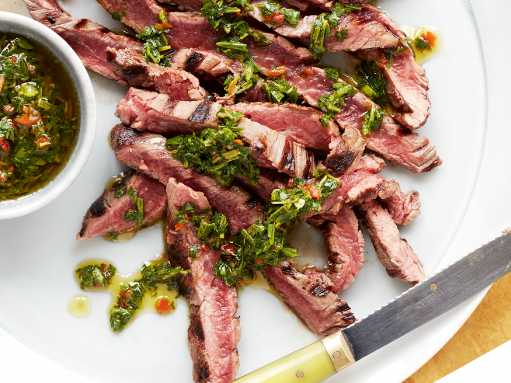

Steak

Description
A succulent dish. The fabled Gordon Ramsey came down from upon his mountain
top to teach us mere mortals the way of the mast chef in true Promethian fashion.
Let out your inner caveman and howl at the moon as you tear into the flesh
of this delicious bovine. Perfect seasoning... which means not much at all.
Ingredients
- 1 (2 1/2 pound) 2-inch thick porterhouse steak, at room temperature
- sea salt to taste
- freshly ground black pepper to taste
- 1 cup hickory wood chips, soaked
- olive oil
Steps
- Season steak generously with salt and black pepper on both sides.
- Place wood chips in the smoker box of your gas grill according to
manufacturer's instructions.
- Preheat one side of the grill to about 250 degrees F (121 degrees C).
Step 4
- Place steak on the cool side of the grill. Cook until an instant-read
thermometer inserted into the center reads about 100 degrees F (37 degrees
C), 25 to 30 minutes. Transfer steak to a plate. Brush with olive oil a
nd cover with aluminum foil.
- Increase heat on the grill to 600 degrees F (315 degrees C) by turning both
burners up to maximum.
Step 6
- Cook steak until crust forms and an instant-read thermometer inserted into
the center reads 125 degrees F (52 degrees C), about 3 minutes per side.
Transfer steak back to plate. Cover with aluminum foil and let rest before
serving, about 5 minutes.